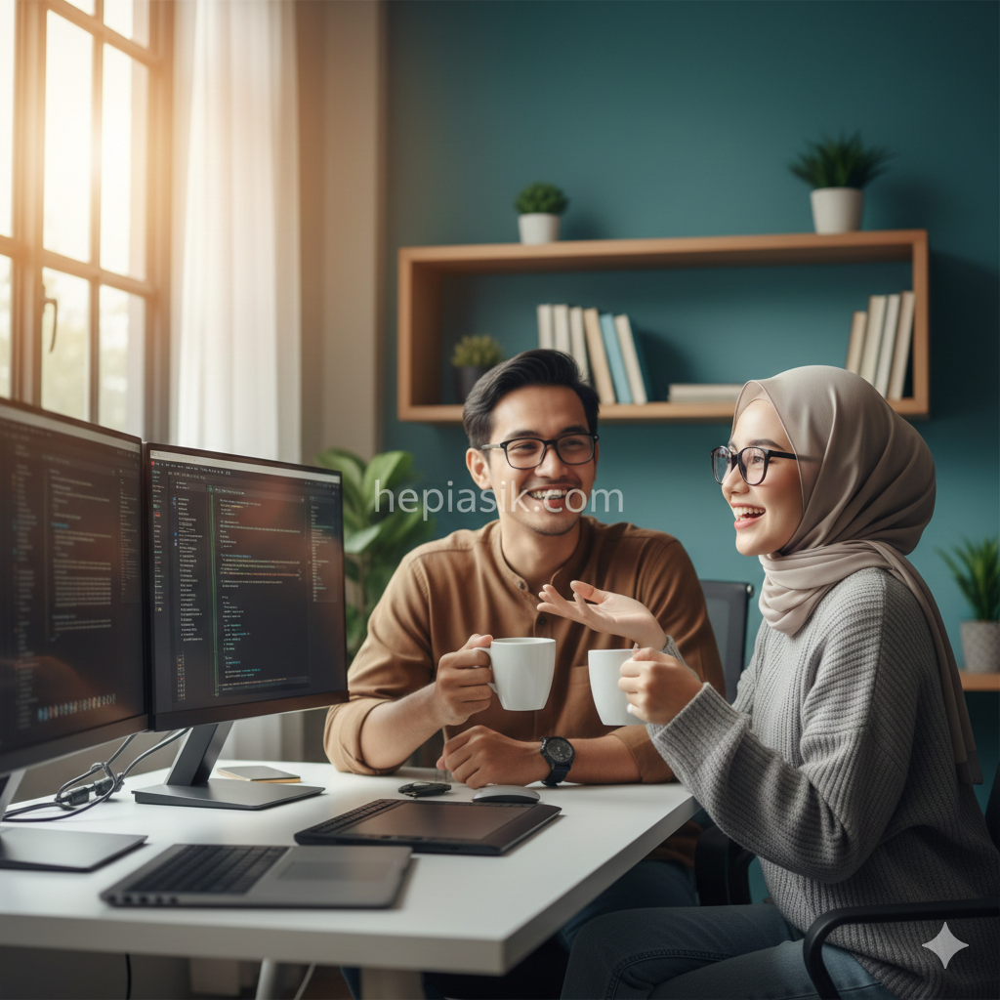

Hiburan Sederhana yang Bikin Waktu Luang Lebih Menyenangkan
Dalam pusaran dunia modern yang menuntut produktivitas tanpa henti, waktu luang sering kali dianggap sebagai kemewahan yang langka atau, secara paradoks, sumber kecemasan baru. Fenomena "leisure sickness" menunjukkan bahwa banyak individu merasa bersalah atau stres saat tidak bekerja. Namun, sains kebahagiaan membuktikan bahwa hiburan sederhana bukan sekadar pelarian, melainkan kebutuhan biologis untuk regenerasi kognitif. Memahami bagaimana mengelola waktu jeda dengan cara yang bermakna adalah kunci untuk mempertahankan performa tinggi tanpa mengorbankan kesehatan mental.
Banyak dari kita terjebak dalam mitos bahwa hiburan haruslah spektakuler, mahal, atau melibatkan perjalanan jauh. Padahal, kebahagiaan otentik sering ditemukan dalam kesederhanaan yang dilakukan dengan kesadaran penuh. Dengan mengintegrasikan prinsip-prinsip psikologi positif dan manajemen energi, kita dapat mengubah momen-momen kecil menjadi sumber inspirasi yang kuat. Artikel ini akan membedah secara mendalam bagaimana aktivitas ringan, koneksi sosial, dan eksplorasi kreatif dapat meningkatkan kualitas hidup secara signifikan tanpa memerlukan sumber daya yang besar.
Redefinisi Hiburan Sederhana dalam Perspektif Psikologi Positif
Hiburan sederhana sering kali disalahpahami sebagai bentuk kemalasan. Padahal, dalam kacamata psikologi, aktivitas yang memberikan kesenangan ringan berfungsi sebagai mekanisme pertahanan terhadap stres kronis. Menurut riset dari Harvard Medical School (Harvard Health, 2023), aktivitas rekreasional yang konsisten dapat menurunkan kadar kortisol dan meningkatkan produksi endorfin secara alami. Ini sejalan dengan konsep "Broaden-and-Build Theory" yang menyatakan bahwa emosi positif yang dihasilkan dari aktivitas menyenangkan dapat memperluas kesadaran kognitif seseorang (Barbara Fredrickson, Positivity, 2009).
Manusia modern cenderung mencari stimulasi instan melalui media sosial yang sering kali berujung pada kelelahan digital. Sebaliknya, hiburan sederhana yang berbasis pada pengalaman sensorik nyata menawarkan pemulihan yang lebih mendalam. Ketika kita mampu mengapresiasi hal-hal kecil, kita sebenarnya sedang melatih otak untuk tetap berada di masa sekarang. Kemampuan ini sangat krusial di era distraksi masif, di mana perhatian menjadi komoditas yang paling diperebutkan (Cal Newport, Deep Work, 2016). Dengan demikian, hiburan adalah investasi pada kejernihan berpikir.
Insight penting di sini adalah bahwa hiburan sederhana berfungsi sebagai tombol reset bagi sistem saraf kita. Alih-alih mencari stimulasi luar yang berlebihan, kembalilah pada aktivitas yang memungkinkan pikiran untuk berkelana tanpa beban. Solusinya dimulai dengan kesadaran bahwa waktu luang adalah ruang suci untuk pemulihan, bukan sekadar sisa waktu dari jam kerja.
Membangun Kondisi Flow dalam Aktivitas Rekreasional
Salah satu cara paling efektif untuk membuat waktu luang lebih menyenangkan adalah dengan mencapai kondisi "Flow". Ini adalah keadaan di mana seseorang sepenuhnya larut dalam sebuah aktivitas hingga kehilangan kesadaran akan waktu. Rahasia mencapai kondisi ini tidak selalu melalui tugas yang berat; hobi sederhana seperti menyusun puzzle, memasak resep baru, atau sekadar berkebun dapat menjadi jalurnya. Sebagaimana dijelaskan oleh pakar kebahagiaan, kondisi flow terjadi ketika tantangan aktivitas sesuai dengan tingkat keterampilan kita (Mihaly Csikszentmihalyi, Flow: The Psychology of Optimal Experience, 1990).

Aktivitas yang memicu flow bertindak sebagai bentuk meditasi aktif. Saat kita fokus pada detail teknis sebuah hobi, sirkuit kecemasan di otak sejenak beristirahat. Hal ini membantu dalam membangun ketahanan mental yang diperlukan untuk menghadapi tantangan profesional di kemudian hari (Angela Duckworth, Grit: The Power of Passion and Perseverance, 2016). Oleh karena itu, pilihlah aktivitas yang membuat Anda tertantang secara ringan tetapi tetap terasa menyenangkan. Flow bukan tentang hasil akhir, melainkan tentang kenikmatan dalam proses kreatif itu sendiri.
Kesimpulannya, aktivitas yang memicu flow adalah bentuk hiburan paling produktif karena ia meregenerasi kapasitas mental sekaligus meningkatkan keterampilan baru secara tidak sadar. Solusinya, identifikasi satu kegiatan taktil yang Anda sukai dan jadwalkan tanpa interupsi gadget untuk merasakan kedalaman pengalaman tersebut.
Kekuatan Jalan Kaki dan Paparan Alam untuk Pemulihan Mental
Salah satu hiburan sederhana yang paling sering diabaikan adalah jalan kaki tanpa tujuan khusus. Sains menunjukkan bahwa berjalan di lingkungan terbuka, terutama yang memiliki unsur alam, secara signifikan meningkatkan kreativitas dan suasana hati. Berdasarkan studi yang diterbitkan oleh American Psychological Association (APA, 2024), berjalan kaki di alam terbuka dapat mengurangi aktivitas di korteks prefrontal subgenual, area otak yang terkait dengan perenungan negatif atau ruminasi.
Aktivitas ini tidak memerlukan peralatan khusus atau biaya keanggotaan gimnastik. Cukup dengan melangkah keluar dan membiarkan indra Anda menyerap lingkungan sekitar, Anda sedang melakukan praktik pemulihan jiwa yang telah dilakukan oleh banyak pemikir besar sejarah. Berjalan membantu kita melepaskan diri dari "keterikatan digital" yang sering kali membuat kita merasa sesak (Henry David Thoreau, Walking, 1862). Gerakan ritmis kaki selaras dengan aliran ide di kepala, menciptakan harmoni antara raga dan pikiran yang sering terputus akibat terlalu lama duduk di meja kerja.
Insight praktis bagi pekerja modern adalah menjadikan jalan kaki sore sebagai ritual transisi antara waktu kerja dan waktu pribadi. Aktivitas ini bukan sekadar perpindahan tempat, melainkan proses detoksifikasi mental. Dengan menggerakkan tubuh, kita melepaskan tumpukan stres sisa pekerjaan dan membuka ruang bagi kegembiraan sederhana yang murni.
Seni Menikmati Keheningan melalui Kebiasaan Membaca
Membaca buku fisik adalah bentuk hiburan sederhana yang menawarkan kedalaman yang tidak bisa diberikan oleh konten video pendek. Membaca memungkinkan kita masuk ke dalam pemikiran orang lain, membangun empati, dan memperluas cakrawala tanpa harus berpindah tempat. Dalam dunia yang serba instan, membaca buku melatih otot kesabaran kognitif kita. Hal ini sejalan dengan temuan bahwa membaca selama enam menit saja dapat menurunkan tingkat stres hingga 68% (University of Sussex dalam laporan BBC News, 2023).
Memilih bacaan yang tepat juga sangat berpengaruh pada kualitas waktu luang kita. Alih-alih membaca berita yang memicu kecemasan, pilihlah literatur yang menginspirasi atau memberikan perspektif baru tentang kehidupan. Membangun kebiasaan kecil namun konsisten dalam membaca dapat memberikan dampak kumulatif yang luar biasa pada kebijaksanaan kita (James Clear, Atomic Habits, 2018). Buku menjadi teman diam yang tidak menuntut balasan cepat seperti pesan di aplikasi percakapan, memberikan ketenangan yang jarang ditemukan di dunia maya.
Membaca adalah hiburan sederhana yang memperkaya batin sekaligus menajamkan intelek. Solusi bagi Anda yang merasa sulit fokus adalah memulai dengan lima halaman per malam sebelum tidur. Ritual ini akan membantu menurunkan aktivitas sistem saraf simpatik dan mempersiapkan tubuh untuk istirahat yang lebih berkualitas.
Koneksi Sosial Minimalis: Kualitas di Atas Kuantitas
Hiburan sederhana tidak selalu berarti kesendirian. Interaksi sosial yang bermakna adalah salah satu pilar utama kebahagiaan manusia. Namun, di era "hyper-connectivity" ini, kita sering kali merasa kesepian meski memiliki ribuan teman di media sosial. Hiburan sosial yang sesungguhnya adalah percakapan mendalam dengan satu atau dua orang terdekat tanpa gangguan layar. Membangun hubungan yang kuat membutuhkan investasi waktu dan perhatian yang tulus (Robert Waldinger & Marc Schulz, The Good Life, 2023).
Penelitian terlama tentang kebahagiaan manusia yang dilakukan oleh Universitas Harvard menyimpulkan bahwa faktor nomor satu yang menentukan kesehatan dan umur panjang bukanlah kekayaan, melainkan kualitas hubungan kita. Menikmati waktu luang dengan tertawa bersama teman lama atau mendengarkan cerita keluarga adalah bentuk "makanan jiwa" yang paling efektif. Kita perlu kembali pada nilai-nilai persahabatan yang otentik di mana kehadiran fisik dihargai lebih tinggi daripada interaksi digital (Erich Fromm, The Art of Loving, 1956).

Insight yang bisa diambil adalah jangan biarkan teknologi menghalangi koneksi emosional. Jadikan waktu luang Anda sebagai momen untuk "hadir" sepenuhnya bagi orang lain. Solusinya, buatlah janji untuk makan siang atau minum kopi tanpa membawa ponsel ke meja, dan rasakan betapa jauh lebih menyenangkannya interaksi tersebut.
Manajemen Dopamin: Menghindari Jebakan Kesenangan Instan
Salah satu hambatan utama untuk menikmati hiburan sederhana adalah ketergantungan kita pada dopamin instan. Aktivitas seperti judi daring, belanja impulsif, atau konsumsi konten media sosial yang tak terbatas menciptakan lonjakan dopamin yang cepat namun diikuti oleh penurunan yang tajam, meninggalkan perasaan kosong. Memahami sirkuit penghargaan di otak sangat penting untuk mengontrol perilaku kita di waktu luang (Anna Lembke, Dopamine Nation, 2021).
Hiburan sederhana yang sehat biasanya bersifat "low-dopamine" di awal tetapi memberikan kepuasan yang stabil dan tahan lama. Contohnya, menulis jurnal atau merapikan ruang kerja mungkin terasa berat untuk dimulai, tetapi perasaan lega setelah menyelesaikannya jauh lebih bermakna daripada kesenangan sesaat dari video viral. Kita harus belajar untuk menunda kepuasan instan demi mendapatkan kebahagiaan yang lebih fundamental (Daniel Goleman, Emotional Intelligence, 1995). Dengan mengelola asupan stimulasi, kita mengembalikan sensitivitas otak terhadap kegembiraan kecil yang alami.
Strategi utamanya adalah melakukan "puasa dopamin" dari gadget selama beberapa jam setiap hari. Insight penting: saat kita menurunkan ambang batas stimulasi kita, hal-hal sederhana seperti melihat senja atau mendengarkan kicau burung akan kembali terasa sangat menyenangkan. Solusinya adalah disiplin dalam menetapkan batasan penggunaan teknologi agar kita tidak kehilangan kemampuan untuk menikmati realitas.
Optimalisasi Ruang Pribadi untuk Ketenangan Maksimal
Lingkungan fisik kita memiliki pengaruh luar biasa terhadap bagaimana kita menikmati waktu luang. Ruang yang berantakan sering kali mencerminkan dan memperparah pikiran yang kacau. Menciptakan sudut kecil yang nyaman di rumah untuk bersantai adalah bentuk investasi pada kebahagiaan sehari-hari. Prinsip desain minimalis atau pengaturan ruang yang baik dapat membantu menurunkan tingkat stres secara visual (Marie Kondo, The Life-Changing Magic of Tidying Up, 2014).
Hiburan sederhana bisa dimulai dari proses merapikan dan mendekorasi ruang tersebut. Menambahkan elemen seperti tanaman dalam ruangan, pencahayaan hangat, atau aroma terapi dapat mengubah atmosfer rumah menjadi oase ketenangan. Saat lingkungan kita mendukung, waktu luang yang hanya sepuluh menit pun bisa terasa sangat memulihkan. Rumah harus menjadi tempat di mana kita bisa melepas identitas profesional dan kembali menjadi diri sendiri seutuhnya (Alain de Botton, The Architecture of Happiness, 2006).
Insight kesimpulan di subbab ini adalah bahwa ketenangan batin dimulai dari keteraturan luar. Solusinya, dedikasikan satu sudut di rumah Anda sebagai "zona bebas stres" di mana tidak ada pekerjaan atau layar diizinkan masuk. Tempat ini akan menjadi tempat pelarian harian Anda untuk menikmati hiburan-hiburan kecil dalam hidup.
Integrasi Hiburan dalam Rutinitas Kerja untuk Produktivitas Berkelanjutan
Terakhir, kita harus menghapus dikotomi tajam antara "bekerja" dan "bermain". Hiburan sederhana sebaiknya diintegrasikan ke dalam sela-sela rutinitas kerja, bukan hanya disimpan untuk akhir pekan. Teknik seperti interval kerja yang diikuti oleh jeda singkat yang berkualitas dapat mencegah kelelahan mental (Tony Schwartz, The Way We're Working Isn't Working, 2010). Produktivitas yang berkelanjutan membutuhkan ritme antara pengeluaran energi dan pemulihan energi.
Gunakan jeda singkat Anda untuk melakukan sesuatu yang sama sekali tidak berhubungan dengan pekerjaan, seperti peregangan ringan atau sekadar memejamkan mata selama beberapa menit. Praktik ini memastikan bahwa Anda tetap segar sepanjang hari dan tidak berakhir dalam kondisi kelelahan total saat jam kerja usai. Manajemen energi jauh lebih penting daripada manajemen waktu untuk mencapai kebahagiaan jangka panjang dalam karier (Jim Loehr & Tony Schwartz, The Power of Full Engagement, 2003).
Kesimpulan akhirnya adalah bahwa hiburan sederhana adalah bensin bagi mesin produktivitas kita. Jangan menunggu hingga Anda merasa "pantas" untuk beristirahat. Solusinya, tanamkan pola pikir bahwa jeda adalah bagian integral dari kesuksesan, bukan penghambatnya. Dengan merayakan waktu luang setiap hari, hidup Anda akan terasa lebih kaya, lebih bermakna, dan tentu saja, lebih menyenangkan.